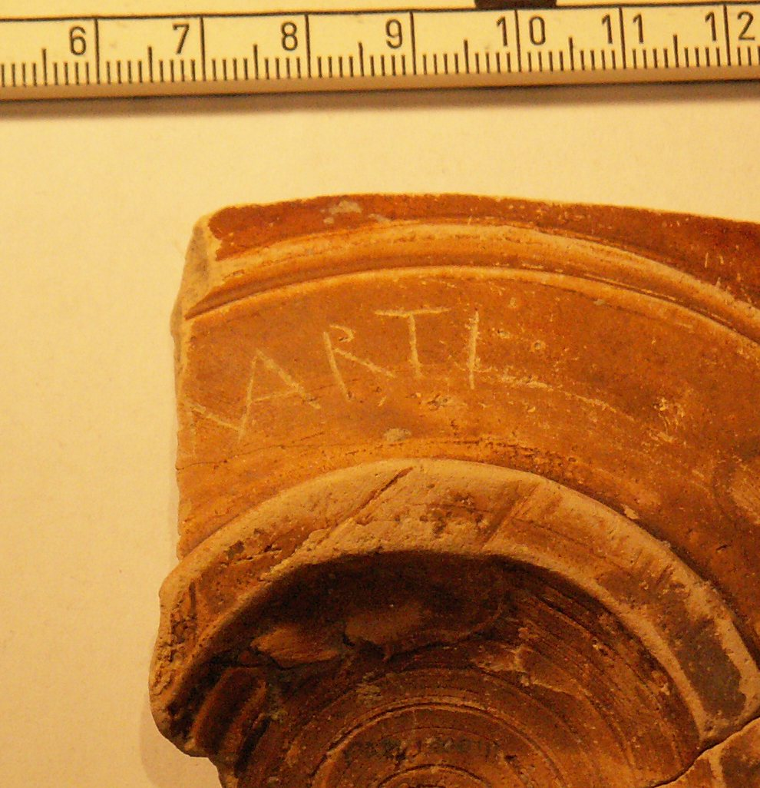

pompelo-031-marti
Grafito nominal «Marti(i)» (Pompelo, Plaza del Castillo, Pamplona, Navarra)
Pompelo (Pamplona, Navarra), Hispania citerior · fin s. II-III d.C.

Texto
1Marti(i)
Comentario
Inscripción relativa probablemente a un Martius, con ligatura MA. Parece poco probable que la inscripción tuviese un inicio diferente. Inscripción en genitivo de un nombre que se encuentra en Játiva. En Clunia se conoce otro grafito con una inscripción referente al femenino Martia. En Navarra no se conocía hasta este momento ningún Martius.
Descripción
- Soporte
- Fragmento de fondo de 6,5 cm de Ø, que corresponde a una forma 37 decorada de T.S.H. Se aprecian restos de la decoración, que consiste en series de círculos sogueados con motivos de rosetas inscritos. Tanto la pasta como la decoración muestran la buena calidad de la pieza; sin embargo, se trata de una pieza con defecto de cocción que ha alterado el color del barniz, mostrando un tono beige en la parte inferior y naranja en la superior.
- Disposición
- Localización del grafito: Cercano al pie.
- Datación
- fin s. II-III d.C.
- Lugar de origen
- Pompelo (Pamplona, Navarra), Hispania citerior
- Hallazgo
- Excavación de la Plaza del Castillo de Pamplona (Gabinete Arqueológico Trama, 2001-2003), sector 3. Los estratos están revueltos (abundan las tumbas musulmanas del sector 3): la datación se basa en las formas cerámicas y el contexto es el de un barrio artesano.
- Ubicación actual
- Almacén de Arqueología del Gobierno de Navarra
Bibliografía
- M. Unzu; P. Ozcáriz Gil, «Grafitos nominales de la Plaza del Castillo de Pamplona», Los vascones de las fuentes antiguas: en torno a una etnia de la antigüedad peninsular (2009), pp. 499-512.